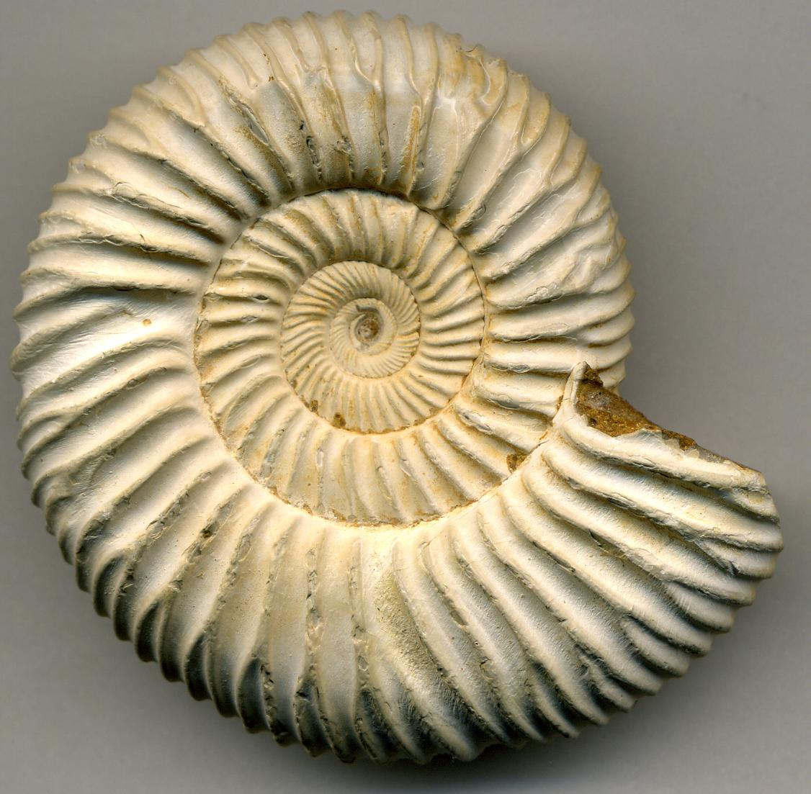

المملكة العربية السعودية — وزارة التعليم
كتاب العلوم — الجزء الأول من المقرر — طبعة ١٤٤٧ / ٢٠٢٥
الْأَحَافِيرُ وَالْوَقُودُ الْأُحْفُورِيُّ
الصف الثالث الابتدائي
إعداد: نايف المطيري
موقع الدرس
أَيْنَ نَحْنُ فِي الْكِتَابِ؟ صفحات ١٦٦ – ١٧٣
الوحدة الثالثة الأرض ومواردها
الدرس الثاني الأحافير والوقود الأحفوريصفحات ١٦٦ – ١٧٣
السُّؤَالُ الْأَسَاسِيُّ: كَيْفَ تَرْتَبِطُ الْأَحَافِيرُ وَالطَّاقَةُ مَعًا؟ (ص ١٦٨)
الأهداف
أَهْدَافُ التَّعَلُّمِ مستخلصة من ص ١٦٦ – ١٧٣
فِي نِهَايَةِ الدَّرْسِ أَكُونُ قَادِرًا عَلَى أَنْ:
أُعَرِّفَ الْأُحْفُورَةَ وَأَذْكُرَ أَمْثِلَةً عَلَيْهَا. أُمَيِّزَ الطَّبَعَاتِ وَالْأَحَافِيرَ الصَّخْرِيَّةَ وَالْقَوَالِبَ وَالنَّمَاذِجَ. أُعَرِّفَ الْوَقُودَ وَأُسَمِّيَ أَنْوَاعَ الْوَقُودِ الْأُحْفُورِيِّ. أُمَيِّزَ بَيْنَ الْمَوَارِدِ الْمُتَجَدِّدَةِ وَغَيْرِ الْمُتَجَدِّدَةِ. أَذْكُرَ مَوَارِدَ الطَّاقَةِ الْمُتَجَدِّدَةَ وَمِنْهَا الطَّاقَةُ الشَّمْسِيَّةُ. التهيئة
أَنْظُرُ وَأَتَسَاءَلُ ص ١٦٦ — سؤال الكتاب
حُفِظَتْ هَذِهِ الذُّبَابَةُ بِالْكَامِلِ كَمَا هِيَ فِي مَادَّةِ الْعَنْبَرِ مَلَايِينَ السِّنِينَ. كَيْفَ تَتَكَوَّنُ الْأَحَافِيرُ؟
معرفة سابقة
مَاذَا أَعْرِفُ مِنْ قَبْلُ؟ تمهيد تربوي
التَّرْسِيبُ تَجْمِيعُ فُتَاتِ الصُّخُورِ فِي أَمَاكِنَ
الِانْقِرَاضُ أَنْ يَقِلَّ عَدَدُ أَفْرَادِ النَّوْعِ حَتَّى يَخْتَفِيَ
الْمَوْرِدُ الطَّبِيعِيُّ مَادَّةٌ عَلَى الْأَرْضِ ضَرُورِيَّةٌ وَمُفِيدَةٌ
الْيَوْمَ كَيْفَ نَعْرِفُ مَخْلُوقَاتِ الْمَاضِي؟
توضيح إضافي: الْأَحَافِيرُ سِجِلٌّ يَحْكِي لَنَا قِصَّةَ الْأَرْضِ قَبْلَ مَلَايِينِ السِّنِينَ.
المفردات
الْمُفْرَدَاتُ الْعِلْمِيَّةُ (١) ص ١٦٨ — مفردات الكتاب
الْأُحْفُورَةُ بَقَايَا أَوْ آثَارُ مَخْلُوقَاتٍ حَيَّةٍ عَاشَتْ فِي الْمَاضِي الْبَعِيدِ.
الْوَقُودُ مَادَّةٌ يَتِمُّ حَرْقُهَا لِلْحُصُولِ عَلَى الطَّاقَةِ.
مَوَارِدُ مُتَجَدِّدَةٌ الْمَوْرِدُ الَّذِي يُمْكِنُ تَعْوِيضُهُ أَوِ اسْتِعْمَالُهُ مَرَّةً أُخْرَى بِسُهُولَةٍ.
مَوَارِدُ غَيْرُ مُتَجَدِّدَةٍ لَا يُمْكِنُ تَعْوِيضُهُ أَوْ إِعَادَةُ اسْتِعْمَالِهِ بِسُهُولَةٍ.
المفردات
الْمُفْرَدَاتُ الْعِلْمِيَّةُ (٢) ص ١٦٨ — مفردات الكتاب
الطَّاقَةُ الشَّمْسِيَّةُ طَاقَةٌ نَحْصُلُ عَلَيْهَا مِنَ الشَّمْسِ.
الْمُفْرَدَاتُ الْخَمْسُ كَمَا وَرَدَتْ فِي صَفْحَةِ «أَقْرَأُ وَأَتَعَلَّمُ» ص ١٦٨.
إِثْرَاءٌ (ص ١٦٨): يُمْكِنُكَ الرُّجُوعُ لِلْمُتْحَفِ الْوَطَنِيِّ الِافْتِرَاضِيِّ لِلِاطِّلَاعِ عَلَى: فِيلِ الْمُسْتَوْدَعِ.
مهارة القراءة
أَسْتَخْلِصُ النَّتَائِجَ ص ١٦٨ — مهارة القراءة في الكتاب
إِرْشَادَاتُ النَّصِّ الِاسْتِنْتَاجَاتُ مَا الَّذِي يَذْكُرُهُ النَّصُّ؟ مَا الْفِكْرَةُ الَّتِي أَصِلُ إِلَيْهَا؟
الفكرة الرئيسة
السُّؤَالُ الْأَسَاسِيُّ ص ١٦٨
كَيْفَ تَرْتَبِطُ الْأَحَافِيرُ وَالطَّاقَةُ مَعًا؟
الشرح
كَيْفَ تَكَوَّنَتِ الْأَحَافِيرُ؟ ص ١٦٨ — نص الكتاب
الْأُحْفُورَةُ بَقَايَا أَوْ آثَارُ مَخْلُوقَاتٍ حَيَّةٍ عَاشَتْ فِي الْمَاضِي الْبَعِيدِ.
الْأَصْدَافُ وَالْعِظَامُ وَأَوْرَاقُ النَّبَاتِ وَآثَارُ الْأَقْدَامِ يُمْكِنُ أَنْ تَتَحَوَّلَ إِلَى أَحَافِيرَ.
الشرح
مَاذَا نَعْرِفُ مِنَ الْأَحَافِيرِ؟ ص ١٦٨ — نص الكتاب
اسْتَفَادَ الْعُلَمَاءُ مِنَ الْأَحَافِيرِ فِي تَحْدِيدِ عُمْرِ الْأَرْضِ وَالَّذِي يُقَدَّرُ بِحَوَالِي مَلَايِينِ السِّنِينَ. كَمَا يُمْكِنُ أَنْ تُزَوِّدَنَا الْأَحَافِيرُ بِدَلَالَاتٍ عَنِ التَّغَيُّرَاتِ الَّتِي طَرَأَتْ عَلَى سَطْحِ الْأَرْضِ مِنْ حَيْثُ الْبِيئَةُ وَالْمَنَاخُ وَطَرِيقَةُ الْمَعِيشَةِ. حَقِيقَةٌ (ص ١٦٨): لَمْ يَكُنْ هُنَاكَ بَشَرٌ عِنْدَمَا انْقَرَضَتِ الدَّيْنَاصُورَاتُ.
الشرح
الطَّبَعَاتُ ص ١٦٨ — نص الكتاب
تَتْرُكُ الْمَخْلُوقَاتُ الْحَيَّةُ الَّتِي كَانَتْ تَعِيشُ فِي الْمَاضِي آثَارًا أَوْ طَبَعَاتٍ فِي مَوَادَّ لَيِّنَةٍ مِثْلِ الطِّينِ،
وَمَعَ مُرُورِ الزَّمَنِ يُمْكِنُ أَنْ تَتَصَلَّبَ هَذِهِ الْمَوَادُّ، وَتَصِيرَ صُخُورًا تُحْفَظُ فِي دَاخِلِهَا هَذِهِ الطَّبَعَاتُ .
الشرح
الْأَحَافِيرُ الصَّخْرِيَّةُ ص ١٦٨ — نص الكتاب
تَحْتَفِظُ بَعْضُ الْأَحَافِيرِ بِأَجْسَامِ الْمَخْلُوقَاتِ الْحَيَّةِ كَامِلَةً ، فَقَدْ حُفِظَتْ فِي:
الْكَهْرَمَانِ
الْمَوَادِّ الْبِتْرُولِيَّةِ
الْجَلِيدِ كَمَا هُوَ فِي أُحْفُورَةِ الْمَامُوثِ ، حَيْثُ حُفِظَ جِسْمُ الْفِيلِ كَمَا هُوَ فِي الْجَلِيدِ. (ص ١٦٨)
الشرح
الدَّفْنُ فِي الرُّسُوبِيَّاتِ ص ١٦٨ — نص الكتاب
فَفِي بَعْضِ الْأَوْقَاتِ قَدْ يُدْفَنُ أَحَدُ الْمَخْلُوقَاتِ الْحَيَّةِ عِنْدَ مَوْتِهِ فِي الرُّسُوبِيَّاتِ ،
وَحِينَمَا تَتَحَوَّلُ الرُّسُوبِيَّاتُ إِلَى صَخْرٍ رُسُوبِيٍّ فَإِنَّهُ يَتَحَوَّلُ إِلَى أُحْفُورَةٍ .
محاكاة
أَنْوَاعُ الْأَحَافِيرِ محاكاة لنص ص ١٦٨ – ١٦٩
أَخْتَارُ نَوْعَ الْأُحْفُورَةِ:
الشرح
الْقَوَالِبُ وَالنَّمَاذِجُ ص ١٦٩ — نص الكتاب
تَتْرُكُ الْأَصْدَافُ أَحْيَانًا وَرَاءَهَا أَحَافِيرَ تُعْرَفُ بِالْقَوَالِبِ . وَالْقَالَبُ تَجْوِيفٌ فَارِغٌ فِي الصَّخْرِ، لَهُ شَكْلٌ مُحَدَّدٌ .
وَيَتَكَوَّنُ الْقَالَبُ عِنْدَمَا يَتَسَرَّبُ الْمَاءُ إِلَى الْفَرَاغَاتِ دَاخِلَ الصَّخْرِ؛ حَيْثُ يُوجَدُ الصَّدَفُ مَدْفُونًا وَمُتَحَجِّرًا دَاخِلَهُ، فَيَقُومُ الْمَاءُ بِبُطْءٍ بِإِزَالَةِ هَذَا الصَّدَفِ ، تَارِكًا مَكَانَهُ تَجْوِيفًا مُفَرَّغًا لَهُ شَكْلُ الْمَخْلُوقِ الْحَيِّ نَفْسُهُ .
الشرح
النَّمُوذَجُ ص ١٦٩ — نص الكتاب
فَإِذَا تَسَرَّبَتِ الْمَعَادِنُ الذَّائِبَةُ ، وَتَجَمَّعَتْ دَاخِلَ الْفَرَاغِ، ثُمَّ تَصَلَّبَتْ، فَإِنَّهَا تُكَوِّنُ نَوْعًا آخَرَ مِنَ الْأَحَافِيرِ لَهُ شَكْلُ الْقَالَبِ نَفْسُهُ، وَيُسَمَّى نَمُوذَجًا .
أختبر نفسي
أَخْتَبِرُ نَفْسِي ص ١٦٩
أَسْتَخْلِصُ النَّتَائِجَ. مَاذَا يُمْكِنُ أَنْ نَتَعَلَّمَ مِنْ دِرَاسَةِ الْأَحَافِيرِ؟
إظهار الإجابة إجابة نموذجية إِرْشَادَاتُ النَّصِّ: اسْتَفَادَ الْعُلَمَاءُ مِنَ الْأَحَافِيرِ فِي تَحْدِيدِ عُمْرِ الْأَرْضِ، وَتُزَوِّدُنَا بِدَلَالَاتٍ عَنِ التَّغَيُّرَاتِ الَّتِي طَرَأَتْ عَلَى سَطْحِ الْأَرْضِ.الِاسْتِنْتَاجَاتُ: نَتَعَلَّمُ عُمْرَ الْأَرْضِ · الْمَخْلُوقَاتِ الَّتِي عَاشَتْ قَدِيمًا وَأَشْكَالَهَا · كَيْفَ تَغَيَّرَتِ الْبِيئَةُ وَالْمَنَاخُ · طَرِيقَةَ الْمَعِيشَةِ .
التَّفْكِيرُ النَّاقِدُ. أَيُّ الْأُحْفُورَتَيْنِ لَهَا فُرْصَةٌ أَكْبَرُ لِتَتَشَكَّلَ: أُحْفُورَةُ دُودَةٍ، أَمْ أُحْفُورَةُ صَدَفَةٍ؟ وَلِمَاذَا؟
إظهار الإجابة إجابة نموذجية مقترحة أُحْفُورَةُ الصَّدَفَةِ لَهَا فُرْصَةٌ أَكْبَرُ؛صُلْبَةٌ فَتُقَاوِمُ التَّحَلُّلَ وَتَبْقَى مُدَّةً طَوِيلَةً حَتَّى تُدْفَنَ فِي الرُّسُوبِيَّاتِ وَتَتَحَجَّرَ، وَهِيَ الَّتِي تَتْرُكُ وَرَاءَهَا الْقَوَالِبَ وَالنَّمَاذِجَ .الدُّودَةُ فَجِسْمُهَا لَيِّنٌ يَتَحَلَّلُ بِسُرْعَةٍ قَبْلَ أَنْ يَتَكَوَّنَ مِنْهُ أُحْفُورَةٌ. (ص ١٦٩)
نشاط
نَشَاطُ الْكِتَابِ — نَمُوذَجُ الطَّبَعَاتِ ص ١٦٩ — خطوات النشاط
أَقْطَعُ قِطْعَةً صَغِيرَةً مِنَ الصَّلْصَالِ إِلَى جُزْأَيْنِ، ثُمَّ أُدَحْرِجُهُمَا لِتَكْوِينِ كُرَتَيْنِ. أَعْمَلُ نَمُوذَجًا. أَضْغَطُ عَلَى إِحْدَى الْكُرَتَيْنِ بِبَاطِنِ إِبْهَامِي، ثُمَّ أَضْغَطُ عَلَى الْكُرَةِ الْأُخْرَى بِظَاهِرِ إِبْهَامِي.أَتَوَاصَلُ. أُبَدِّلُ كُرَتَيِ الصَّلْصَالِ اللَّتَيْنِ عَمِلْتُهُمَا مَعَ أَحَدِ زُمَلَائِي فِي الصَّفِّ. فِيمَ تَتَشَابَهُ الْكُرَاتُ؟ وَفِيمَ تَخْتَلِفُ؟إجابة النشاط
الْخُطُوَتَانِ ٣ وَ ٤ ص ١٦٩
٣. أَتَوَاصَلُ. فِيمَ تَتَشَابَهُ الْكُرَاتُ؟ وَفِيمَ تَخْتَلِفُ؟
إظهار الإجابة إجابة نموذجية مقترحة تَتَشَابَهُ: فِي أَنَّ كُلَّ كُرَةٍ تَحْمِلُ طَبْعَةً غَائِرَةً تَرَكَهَا الْإِبْهَامُ فِي مَادَّةٍ لَيِّنَةٍ.تَخْتَلِفُ: فِي شَكْلِ الطَّبْعَةِ وَتَفَاصِيلِهَا ؛ فَبَاطِنُ الْإِبْهَامِ يَتْرُكُ خُطُوطَ الْبَصْمَةِ، وَظَاهِرُهُ يَتْرُكُ شَكْلَ الظُّفْرِ. وَتَخْتَلِفُ أَيْضًا مِنْ طَالِبٍ إِلَى آخَرَ؛ لِأَنَّ لِكُلِّ إِنْسَانٍ بَصْمَةً خَاصَّةً بِهِ .
٤. أَسْتَنْتِجُ. مَاذَا يُمْكِنُ أَنْ نَتَعَلَّمَ مِنَ الْمُقَارَنَةِ بَيْنَ طَبَعَاتِ الْأَحَافِيرِ؟
إظهار الإجابة إجابة نموذجية مقترحة نَتَعَلَّمُ أَنَّ الطَّبْعَةَ تَحْفَظُ شَكْلَ الْمَخْلُوقِ الَّذِي تَرَكَهَا وَتَفَاصِيلَهُ.تَمْيِيزَ الْأَنْوَاعِ الْمُخْتَلِفَةِ مِنَ الْمَخْلُوقَاتِ، وَمَعْرِفَةَ أَحْجَامِهَا وَأَشْكَالِهَا وَطَرِيقَةِ حَرَكَتِهَا ، وَمَعْرِفَةَ الْبِيئَةِ الَّتِي عَاشَتْ فِيهَا . وَهَكَذَا يَدْرُسُ الْعُلَمَاءُ الْأَحَافِيرَ.
الشرح
مَا الْوَقُودُ الْأُحْفُورِيُّ؟ ص ١٧٠ — نص الكتاب
الْوَقُودُ مَادَّةٌ يَتِمُّ حَرْقُهَا لِلْحُصُولِ عَلَى الطَّاقَةِ؛ وَذَلِكَ لِأَغْرَاضِ التَّدْفِئَةِ، وَتَسْيِيرِ السَّيَّارَاتِ وَالطَّائِرَاتِ وَتَوْلِيدِ الْكَهْرَبَاءِ .
أَنْوَاعُ الْوَقُودِ الْأُحْفُورِيِّ ثَلَاثَةٌ هِيَ:
الْفَحْمُ الْحَجَرِيُّ
النَّفْطُ
الْغَازُ الطَّبِيعِيُّ وَتَكَوَّنَتْ هَذِهِ الْأَنْوَاعُ مِنْ بَقَايَا النَّبَاتَاتِ وَالْحَيَوَانَاتِ الَّتِي عَاشَتْ قَبْلَ مَلَايِينِ السِّنِينَ .
الشرح
النَّفْطُ وَالْمَوَارِدُ الطَّبِيعِيَّةُ ص ١٧٠ — نص الكتاب
يُوجَدُ النَّفْطُ فِي بَاطِنِ الْأَرْضِ، وَيَسْتَخْرِجُهُ الْإِنْسَانُ بِالْحَفْرِ، وَالضَّخِّ إِلَى سَطْحِ الْأَرْضِ.
وَيُعَدُّ النَّفْطُ وَالْفَحْمُ الْحَجَرِيُّ وَالْغَازُ الطَّبِيعِيُّ مِنَ الْمَوَارِدِ الطَّبِيعِيَّةِ. وَمِنَ الْمَوَارِدِ الطَّبِيعِيَّةِ أَيْضًا النَّبَاتَاتُ وَالْحَيَوَانَاتُ وَالْمَاءُ وَالْهَوَاءُ .
أَحَدُ حَفَّارَاتِ آبَارِ النَّفْطِ يَضُخُّ النَّفْطَ إِلَى سَطْحِ الْأَرْضِ. (ص ١٧٠)
محاكاة
كَيْفَ يَتَكَوَّنُ الْفَحْمُ الْحَجَرِيُّ؟ محاكاة لشكل ص ١٧٠ – ١٧١
أُشَغِّلُ مُرُورَ الزَّمَنِ
أُعِيدُ
١ مِنْ ٣
الْخُثُّ
الْفَحْمُ الْحَجَرِيُّ
سؤال من الكتاب
أَقْرَأُ الشَّكْلَ ص ١٧١
مَا الْوَقُودُ الَّذِي يَتَكَوَّنُ قَبْلَ تَكَوُّنِ الْوَقُودِ الْأُحْفُورِيِّ؟
إِرْشَادُ الْكِتَابِ: أَنْظُرُ إِلَى الْمَعْلُومَاتِ الْمُدَوَّنَةِ أَسْفَلَ الشَّكْلِ.
إظهار الإجابة الإجابة هُوَ الْخُثُّ .بِبُطْءٍ يَتَحَوَّلُ الْخُثُّ إِلَى صَخْرٍ رُسُوبِيٍّ يُسَمَّى الْفَحْمَ الْحَجَرِيَّ . (ص ١٧٠ – ١٧١)
الشرح
الْمَوَارِدُ الْمُتَجَدِّدَةُ ص ١٧١ — نص الكتاب
وَيُمْكِنُ تَعْوِيضُ كُلٍّ مِنَ النَّبَاتَاتِ وَالْحَيَوَانَاتِ وَالْمِيَاهِ وَالْهَوَاءِ :
حَيْثُ يُمْكِنُ نُمُوُّ نَبَاتَاتٍ جَدِيدَةٍ. وَوِلَادَةُ أَوْ فَقْسُ حَيَوَانَاتٍ جَدِيدَةٍ. وَيَجْلِبُ الْمَطَرُ وَالثَّلْجُ الْمَزِيدَ مِنَ الْمَاءِ. كَذَلِكَ تُنْتِجُ النَّبَاتَاتُ الْأُكْسِجِينَ فِي أَثْنَاءِ صُنْعِ غِذَائِهَا، وَتُعِيدُهُ إِلَى الْهَوَاءِ. وَتُنْتَجُ الطَّاقَةُ الْحَيَوِيَّةُ عَنْ حَرْقِ النَّبَاتَاتِ الْمَيِّتَةِ وَفَضَلَاتِ الْحَيَوَانَاتِ. لِهَذَا يُطْلَقُ عَلَى كُلٍّ مِنَ النَّبَاتَاتِ وَالْحَيَوَانَاتِ وَالْمَاءِ وَالْهَوَاءِ الْمَوَارِدُ الْمُتَجَدِّدَةُ .
الشرح
مُتَجَدِّدٌ وَغَيْرُ مُتَجَدِّدٍ ص ١٧١ — نص الكتاب
الْمَوْرِدُ الْمُتَجَدِّدُ هُوَ الْمَوْرِدُ الَّذِي يُمْكِنُ تَعْوِيضُهُ أَوِ اسْتِعْمَالُهُ مَرَّةً أُخْرَى بِسُهُولَةٍ.
الْمَوْرِدُ غَيْرُ الْمُتَجَدِّدِ فَلَا يُمْكِنُ تَعْوِيضُهُ أَوْ إِعَادَةُ اسْتِعْمَالِهِ بِسُهُولَةٍ.
وَلِهَذَا فَالْوَقُودُ الْأُحْفُورِيُّ مَوْرِدٌ غَيْرُ مُتَجَدِّدٍ ؛ لِأَنَّهُ يَحْتَاجُ إِلَى مَلَايِينِ السِّنِينَ لِيَتَكَوَّنَ . وَعِنْدَمَا يُسْتَعْمَلُ يَنْفَدُ، وَلَا يُمْكِنُ تَعْوِيضُهُ .
محاكاة
مَوْرِدٌ مُتَجَدِّدٌ أَمْ غَيْرُ مُتَجَدِّدٍ؟ تدريب تفاعلي على نص ص ١٧١
١ مِنْ ٦ الْإِجَابَاتُ الصَّحِيحَةُ: ٠
مَوْرِدٌ مُتَجَدِّدٌ
مَوْرِدٌ غَيْرُ مُتَجَدِّدٍ
أَخْتَارُ، ثُمَّ أَعْرِفُ السَّبَبَ.
أختبر نفسي
أَخْتَبِرُ نَفْسِي ص ١٧١
أَسْتَخْلِصُ النَّتَائِجَ. لِمَاذَا يَجِبُ عَدَمُ الْإِسْرَافِ فِي اسْتِهْلَاكِ الْوَقُودِ الْأُحْفُورِيِّ؟
إظهار الإجابة إجابة نموذجية إِرْشَادَاتُ النَّصِّ: الْوَقُودُ الْأُحْفُورِيُّ مَوْرِدٌ غَيْرُ مُتَجَدِّدٍ، يَحْتَاجُ إِلَى مَلَايِينِ السِّنِينَ لِيَتَكَوَّنَ، وَعِنْدَمَا يُسْتَعْمَلُ يَنْفَدُ وَلَا يُمْكِنُ تَعْوِيضُهُ.الِاسْتِنْتَاجُ: إِذَا أَسْرَفْنَا فِي اسْتِهْلَاكِهِ نَفِدَ سَرِيعًا وَلَمْ يَبْقَ مِنْهُ شَيْءٌ لِأَجْيَالِ الْمُسْتَقْبَلِ. لِذَا يَجِبُ تَرْشِيدُ اسْتِهْلَاكِهِ وَاسْتِعْمَالُ مَوَارِدِ الطَّاقَةِ الْمُتَجَدِّدَةِ عِوَضًا عَنْهُ. (ص ١٧١ – ١٧٢)
التَّفْكِيرُ النَّاقِدُ. أَذْكُرُ مَوَارِدَ أُخْرَى غَيْرَ مُتَجَدِّدَةٍ.
إظهار الإجابة إجابة نموذجية مقترحة الْفَحْمُ الْحَجَرِيُّ وَالْغَازُ الطَّبِيعِيُّ — كَمَا فِي النَّفْطِ.الْمَعَادِنُ كَالْحَدِيدِ وَالنُّحَاسِ وَالذَّهَبِ، وَالصُّخُورُ ، وَالتُّرْبَةُ ؛ فَتَكَوُّنُ ١ سم مِنَ التُّرْبَةِ يَحْتَاجُ إِلَى أَكْثَرَ مِنْ ١٠٠٠ سَنَةٍ.لَا يُمْكِنُ تَعْوِيضُهَا بِسُهُولَةٍ .
الشرح
مَا مَوَارِدُ الطَّاقَةِ الْأُخْرَى؟ ص ١٧٢ — نص الكتاب
الْوَقُودُ الْأُحْفُورِيُّ مَوْرِدٌ مِنْ مَوَارِدِ الطَّاقَةِ غَيْرِ الْمُتَجَدِّدَةِ. وَيُسْتَعْمَلُ الْوَقُودُ الْأُحْفُورِيُّ كَثِيرًا.
وَلِهَذَا السَّبَبِ نَحْتَاجُ إِلَى اسْتِعْمَالِ مَوَارِدِ طَاقَةٍ مُتَجَدِّدَةٍ عِوَضًا عَنْهُ .
وَمِنْ مَوَارِدِ الطَّاقَةِ الْمُتَجَدِّدَةِ الطَّاقَةُ الشَّمْسِيَّةُ ، وَهِيَ طَاقَةٌ نَحْصُلُ عَلَيْهَا مِنَ الشَّمْسِ.
محاكاة
مَوَارِدُ الطَّاقَةِ الْمُتَجَدِّدَةِ محاكاة لنص ص ١٧٢
أَخْتَارُ الْمَوْرِدَ:
الشرح
مَوَارِدُ الطَّاقَةِ الْمُتَجَدِّدَةِ ص ١٧٢ — نص الكتاب
وَمِنْ مَوَارِدِ الطَّاقَةِ الْمُتَجَدِّدَةِ أَيْضًا:
الْمِيَاهُ الْجَارِيَةُ
الرِّيَاحُ الْحَرَارَةُ الْجَوْفِيَّةُ (دَاخِلَ الْأَرْضِ)
وَيُمْكِنُ اسْتِعْمَالُ كُلٍّ مِنَ الطَّاقَةِ الشَّمْسِيَّةِ وَالْمِيَاهِ الْجَارِيَةِ وَالرِّيَاحِ وَالْحَرَارَةِ الْجَوْفِيَّةِ فِي إِنْتَاجِ الطَّاقَةِ الْكَهْرَبَائِيَّةِ .
الشرح
جُهُودُ الْمَمْلَكَةِ ص ١٧٢ — نص الكتاب
وَتَبْذُلُ مَدِينَةُ الْمَلِكِ عَبْدِ اللَّهِ لِلطَّاقَةِ الذَّرِّيَّةِ وَالْمُتَجَدِّدَةِ جُهُودًا وَاضِحَةً لِلْحِفَاظِ عَلَى مَصَادِرِ الطَّاقَةِ فِي الْمَمْلَكَةِ الْعَرَبِيَّةِ السُّعُودِيَّةِ، مِنْ نَفْطٍ وَغَازٍ لِأَجْيَالِ الْمُسْتَقْبَلِ؛
حَيْثُ تَسْعَى إِلَى تَطْوِيرِ صِنَاعَةِ الطَّاقَةِ الشَّمْسِيَّةِ، وَاسْتِغْلَالِهَا فِي جَمِيعِ مَجَالَاتِ الْحَيَاةِ .
مِنْ صُوَرِ الْكِتَابِ: الْقَرْيَةُ الشَّمْسِيَّةُ بِالْعُيَيْنَةِ الْقَرِيبَةِ مِنْ مَدِينَةِ الرِّيَاضِ. وَقَدْ يَأْتِي يَوْمٌ أَقُودُ فِيهِ سَيَّارَةً تَعْمَلُ بِالطَّاقَةِ الشَّمْسِيَّةِ.
رؤية ٢٠٣٠
الرَّبْطُ مَعَ رُؤْيَةِ ٢٠٣٠ ص ١٧٢ — الكتاب
اقْتِصَادٌ مُزْدَهِرٌ ٣ . ٢ . ٤ زِيَادَةُ مُسَاهَمَةِ مَصَادِرِ الطَّاقَةِ الْمُتَجَدِّدَةِ فِي مَزِيجِ الطَّاقَةِ
أختبر نفسي
اخْتَبِرُ نَفْسِي ص ١٧٢
أَسْتَخْلِصُ النَّتَائِجَ. لِمَاذَا تُعَدُّ كُلٌّ مِنَ الشَّمْسِ وَالرِّيَاحِ وَالْمِيَاهِ الْجَارِيَةِ مِنْ مَوَارِدِ الطَّاقَةِ الْمُتَجَدِّدَةِ؟
إظهار الإجابة إجابة نموذجية إِرْشَادَاتُ النَّصِّ: الْمَوْرِدُ الْمُتَجَدِّدُ هُوَ الَّذِي يُمْكِنُ تَعْوِيضُهُ أَوِ اسْتِعْمَالُهُ مَرَّةً أُخْرَى بِسُهُولَةٍ.الِاسْتِنْتَاجُ: لِأَنَّهَا لَا تَنْفَدُ بِالِاسْتِعْمَالِ ؛ فَالشَّمْسُ تُشْرِقُ كُلَّ يَوْمٍ، وَالرِّيَاحُ تَهُبُّ دَائِمًا، وَالْمِيَاهُ الْجَارِيَةُ يُجَدِّدُهَا الْمَطَرُ وَالثَّلْجُ. وَيُمْكِنُ اسْتِعْمَالُهَا جَمِيعًا فِي إِنْتَاجِ الطَّاقَةِ الْكَهْرَبَائِيَّةِ. (ص ١٧١ – ١٧٢)
التَّفْكِيرُ النَّاقِدُ. مَا الْأَمَاكِنُ الْمُنَاسِبَةُ لِتَوْلِيدِ الطَّاقَةِ الْكَهْرَبَائِيَّةِ بِاسْتِعْمَالِ الرِّيَاحِ؟
إظهار الإجابة إجابة نموذجية مقترحة الْأَمَاكِنُ الَّتِي تَهُبُّ فِيهَا الرِّيَاحُ بِقُوَّةٍ وَبِاسْتِمْرَارٍ ، وَمِنْهَا:السَّوَاحِلُ وَالشَّوَاطِئُ · قِمَمُ الْجِبَالِ وَالْمُرْتَفَعَاتُ · الصَّحَارِي وَالسُّهُولُ الْمَفْتُوحَةُ الْخَالِيَةُ مِنَ الْمَبَانِي وَالْأَشْجَارِ الَّتِي تَحْجُبُ الرِّيَاحَ.
نشاط استقصائي
أَسْتَكْشِفُ — الْهَدَفُ وَالْأَدَوَاتُ ص ١٦٧ — نشاط الكتاب
سؤال النشاط: كَيْفَ تَتَكَوَّنُ الْأَحَافِيرُ؟
الْهَدَفُ: مَعْرِفَةُ كَيْفَ أَصْبَحَتِ الْمَخْلُوقَاتُ الْحَيَّةُ الَّتِي عَاشَتْ فِي الْمَاضِي أَحَافِيرَ.
أَحْتَاجُ إِلَى:
مِلْعَقَةٍ بِلَاسْتِيكِيَّةٍ
مِنْشَفَةٍ وَرَقِيَّةٍ
صَمْغٍ
شَرِيحَتَيْ تُفَّاحٍ نشاط استقصائي
أَسْتَكْشِفُ — الْخُطُوَاتُ ص ١٦٧ — الخطوات ١ – ٤
أَعْمَلُ نَمُوذَجًا. أَحْمِلُ الْمِلْعَقَةَ فَوْقَ الْمِنْشَفَةِ الْوَرَقِيَّةِ، ثُمَّ أَضَعُ كَمِّيَّةً مِنَ الصَّمْغِ فِي الْمِلْعَقَةِ، وَأَتْرُكُهُ ١٠ دَقَائِقَ. وَهَذَا يُمَثِّلُ نَمُوذَجًا لِلْمَادَّةِ الصَّمْغِيَّةِ الشَّجَرِيَّةِ.أَعْمَلُ نَمُوذَجًا. أَضَعُ شَرِيحَةً مِنَ التُّفَّاحِ فِي الصَّمْغِ. وَهَذَا يُمَثِّلُ نَمُوذَجًا لِلْمَخْلُوقِ الْحَيِّ وَقَدِ الْتَصَقَ بِصَمْغِ الْأَشْجَارِ. أَضَعُ بِبُطْءٍ صَمْغًا أَكْثَرَ حَتَّى أُغَطِّيَ شَرِيحَةَ التُّفَّاحِ تَمَامًا.أَتَعَامَلُ مَعَ الْمُتَغَيِّرَاتِ. أَضَعُ الْمِلْعَقَةَ عَلَى الْمِنْشَفَةِ الْوَرَقِيَّةِ، وَأَضَعُ بِجَانِبِهَا شَرِيحَةَ التُّفَّاحِ الْأُخْرَى.أُرَاقِبُ شَرِيحَتَيِ التُّفَّاحِ مِنْ وَقْتٍ إِلَى آخَرَ طَوَالَ الْيَوْمِ، وَأُسَجِّلُ مُلَاحَظَاتِي. أستخلص النتائج
الْخُطُوَاتُ ٥ – ٧ ص ١٦٧
٥. أُفَسِّرُ الْبَيَانَاتِ. مَا الْفُرُوقُ الَّتِي لَاحَظْتُهَا بَيْنَ شَرِيحَتَيِ التُّفَّاحِ؟
إظهار الإجابة إجابة نموذجية مقترحة الشَّرِيحَةُ الْمَكْشُوفَةُ: تَغَيَّرَ لَوْنُهَا فَاسْمَرَّتْ، وَجَفَّتْ وَتَجَعَّدَتْ، وَبَدَأَتْ تَتَحَلَّلُ.الشَّرِيحَةُ الْمُغَطَّاةُ بِالصَّمْغِ: بَقِيَتْ كَمَا هِيَ تَقْرِيبًا ؛ لَمْ يَتَغَيَّرْ لَوْنُهَا كَثِيرًا وَلَمْ تَجِفَّ.
٦. أَسْتَنْتِجُ. مَا السَّبَبُ فِي الْفُرُوقِ الَّتِي لَاحَظْتُهَا؟
إظهار الإجابة إجابة نموذجية مقترحة لِأَنَّ الصَّمْغَ غَطَّى الشَّرِيحَةَ تَمَامًا وَمَنَعَ عَنْهَا الْهَوَاءَ ، فَحَمَاهَا مِنَ الْجَفَافِ وَمِنَ الْمَخْلُوقَاتِ الَّتِي تُحَلِّلُهَا . أَمَّا الشَّرِيحَةُ الْمَكْشُوفَةُ فَتَعَرَّضَتْ لِلْهَوَاءِ فَتَحَلَّلَتْ.
٧. أَسْتَنْتِجُ. كَيْفَ تَكَوَّنَتْ بَعْضُ الْأَحَافِيرِ؟
إظهار الإجابة إجابة نموذجية مقترحة تَكَوَّنَتْ بَعْضُ الْأَحَافِيرِ عِنْدَمَا الْتَصَقَ الْمَخْلُوقُ الْحَيُّ بِمَادَّةٍ صَمْغِيَّةٍ خَرَجَتْ مِنَ الْأَشْجَارِ فَغَطَّتْهُ تَمَامًا ، فَمَنَعَتْ عَنْهُ الْهَوَاءَ وَحَمَتْهُ مِنَ التَّحَلُّلِ. وَمَعَ مُرُورِ مَلَايِينِ السِّنِينَ تَصَلَّبَتْ هَذِهِ الْمَادَّةُ وَصَارَتْ كَهْرَمَانًا (عَنْبَرًا) حُفِظَ فِي دَاخِلِهِ الْمَخْلُوقُ كَامِلًا — كَمَا فِي الذُّبَابَةِ فِي صُورَةِ ص ١٦٦. (ص ١٦٨)
أستكشف أكثر
أُجَرِّبُ ص ١٦٧
هَلْ يُمْكِنُ أَنْ يَتَحَوَّلَ الْمَخْلُوقُ الْحَيُّ إِلَى أُحْفُورَةٍ فِي الْجَلِيدِ؟ أَضَعُ خُطَّةً لِلتَّحَقُّقِ مِنْ ذَلِكَ، وَأُجَرِّبُهَا.
إظهار الإجابة إجابة نموذجية مقترحة نَعَمْ ؛ فَقَدْ حُفِظَتْ أُحْفُورَةُ الْمَامُوثِ فِي الْجَلِيدِ. (ص ١٦٨)خُطَّتِي: شَرِيحَتَيْ تُفَّاحٍ مُتَمَاثِلَتَيْنِ .الْمُجَمِّدِ حَتَّى تَتَجَمَّدَ تَمَامًا.مَكْشُوفَةً فِي الْغُرْفَةِ.تَوَقُّعِي: الشَّرِيحَةُ الْمُتَجَمِّدَةُ تَبْقَى كَمَا هِيَ ؛ لِأَنَّ الْبَرْدَ الشَّدِيدَ يُوقِفُ التَّحَلُّلَ، أَمَّا الْمَكْشُوفَةُ فَتَتَغَيَّرُ وَتَتَحَلَّلُ.
مراجعة الدرس
السُّؤَالَانِ ١ وَ ٢ ص ١٧٣
١. الْمُفْرَدَاتُ. مَا الْمَقْصُودُ بِالْأُحْفُورَةِ؟ أَذْكُرُ مِثَالَيْنِ عَلَيْهَا.
إظهار الإجابة إجابة نموذجية الْأُحْفُورَةُ بَقَايَا أَوْ آثَارُ مَخْلُوقَاتٍ حَيَّةٍ عَاشَتْ فِي الْمَاضِي الْبَعِيدِ . (ص ١٦٨)مِثَالَانِ: أُحْفُورَةُ الْمَامُوثِ الَّتِي حُفِظَ فِيهَا جِسْمُ الْفِيلِ كَمَا هُوَ فِي الْجَلِيدِ · وَالذُّبَابَةُ الْمَحْفُوظَةُ فِي مَادَّةِ الْعَنْبَرِ . وَمِنْهَا أَيْضًا الْأَصْدَافُ وَالْعِظَامُ وَأَوْرَاقُ النَّبَاتِ وَآثَارُ الْأَقْدَامِ.
٢. أَسْتَخْلِصُ النَّتَائِجَ. هَلْ يُمْكِنُ اسْتِعْمَالُ الْوَقُودِ الْأُحْفُورِيِّ كَثِيرًا؟ أُوَضِّحُ إِجَابَتِي.
إظهار الإجابة إجابة نموذجية إِرْشَادَاتُ النَّصِّ: الْوَقُودُ الْأُحْفُورِيُّ مَوْرِدٌ غَيْرُ مُتَجَدِّدٍ · يَحْتَاجُ إِلَى مَلَايِينِ السِّنِينَ لِيَتَكَوَّنَ · عِنْدَمَا يُسْتَعْمَلُ يَنْفَدُ وَلَا يُمْكِنُ تَعْوِيضُهُ.الِاسْتِنْتَاجُ: لَا ، لَا يُمْكِنُ اسْتِعْمَالُهُ كَثِيرًا؛ لِأَنَّهُ سَيَنْفَدُ وَلَنْ يَبْقَى مِنْهُ شَيْءٌ لِأَجْيَالِ الْمُسْتَقْبَلِ. وَلِهَذَا نَحْتَاجُ إِلَى اسْتِعْمَالِ مَوَارِدِ طَاقَةٍ مُتَجَدِّدَةٍ عِوَضًا عَنْهُ . (ص ١٧١ – ١٧٢)
مراجعة الدرس
السُّؤَالَانِ ٣ وَ ٤ ص ١٧٣
٣. التَّفْكِيرُ النَّاقِدُ. مَا اسْتِعْمَالَاتُ الْوَقُودِ الْأُحْفُورِيِّ؟
إظهار الإجابة إجابة نموذجية مقترحة الْوَقُودُ مَادَّةٌ يَتِمُّ حَرْقُهَا لِلْحُصُولِ عَلَى الطَّاقَةِ؛ وَذَلِكَ لِأَغْرَاضِ:التَّدْفِئَةِ · تَسْيِيرِ السَّيَّارَاتِ وَالطَّائِرَاتِ · تَوْلِيدِ الْكَهْرَبَاءِ . (ص ١٧٠)توضيح إضافي: وَيَدْخُلُ النَّفْطُ أَيْضًا فِي صِنَاعَةِ كَثِيرٍ مِنَ الْمُنْتَجَاتِ.
٤. أَخْتَارُ الْإِجَابَةَ الصَّحِيحَةَ. أَيٌّ مِمَّا يَلِي يُعَدُّ مَوْرِدًا طَبِيعِيًّا غَيْرَ مُتَجَدِّدٍ؟
إظهار الإجابة إجابة نموذجية الْإِجَابَةُ الصَّحِيحَةُ: د – الْفَحْمُ الْحَجَرِيُّ ؛ فَهُوَ مِنَ الْوَقُودِ الْأُحْفُورِيِّ الَّذِي يَحْتَاجُ إِلَى مَلَايِينِ السِّنِينَ لِيَتَكَوَّنَ، وَعِنْدَمَا يُسْتَعْمَلُ يَنْفَدُ وَلَا يُمْكِنُ تَعْوِيضُهُ.أَمَّا الْمَاءُ وَالْهَوَاءُ وَالنَّبَاتَاتُ فَمَوَارِدُ مُتَجَدِّدَةٌ. (ص ١٧١)
مراجعة الدرس
السُّؤَالُ الْأَسَاسِيُّ ص ١٧٣
٥. السُّؤَالُ الْأَسَاسِيُّ. كَيْفَ تَرْتَبِطُ الْأَحَافِيرُ وَالطَّاقَةُ مَعًا؟
إظهار الإجابة إجابة نموذجية تَرْتَبِطَانِ لِأَنَّ الْوَقُودَ الْأُحْفُورِيَّ نَفْسَهُ نَشَأَ مِنْ بَقَايَا مَخْلُوقَاتٍ حَيَّةٍ قَدِيمَةٍ :الْفَحْمُ الْحَجَرِيُّ وَالنَّفْطُ وَالْغَازُ الطَّبِيعِيُّ تَكَوَّنَتْ مِنْ بَقَايَا النَّبَاتَاتِ وَالْحَيَوَانَاتِ الَّتِي عَاشَتْ قَبْلَ مَلَايِينِ السِّنِينَ .نَحْرِقُ هَذَا الْوَقُودَ نَحْصُلُ عَلَى الطَّاقَةِ لِلتَّدْفِئَةِ وَتَسْيِيرِ السَّيَّارَاتِ وَتَوْلِيدِ الْكَهْرَبَاءِ.مَوْرِدٌ غَيْرُ مُتَجَدِّدٍ يَنْفَدُ وَلَا يُعَوَّضُ، نَحْتَاجُ إِلَى مَوَارِدِ الطَّاقَةِ الْمُتَجَدِّدَةِ كَالطَّاقَةِ الشَّمْسِيَّةِ وَالرِّيَاحِ وَالْمِيَاهِ الْجَارِيَةِ.
ملخص مصور
مُلَخَّصٌ مُصَوَّرٌ ص ١٧٣ — ملخص الكتاب
الْمِحْوَرُ الْخُلَاصَةُ الْأَحَافِيرُ تُزَوِّدُنَا الْأَحَافِيرُ بِأَدِلَّةٍ عَلَى التَّغَيُّرِ الَّذِي طَرَأَ عَلَى سَطْحِ الْأَرْضِ مِنْ حَيْثُ الْبِيئَةُ وَالظُّرُوفُ الْمُنَاخِيَّةُ. الْوَقُودُ الْأُحْفُورِيُّ الْوَقُودُ الْأُحْفُورِيُّ مِنْ مَوَارِدِ الطَّاقَةِ غَيْرِ الْمُتَجَدِّدَةِ. الطَّاقَةُ الْمُتَجَدِّدَةُ الشَّمْسُ وَالرِّيَاحُ وَالْمِيَاهُ مِنْ مَوَارِدِ الطَّاقَةِ الْمُتَجَدِّدَةِ.
المطويات
أُنَظِّمُ أَفْكَارِي ص ١٧٣ — المطويات
أَعْمَلُ مَطْوِيَّةً كَالْمُبَيَّنَةِ فِي الشَّكْلِ الْمُجَاوِرِ. أُلَخِّصُ فِيهَا مَا تَعَلَّمْتُهُ عَنِ الْأَحَافِيرِ وَالْوَقُودِ الْأُحْفُورِيِّ.
أَنْوَاعُ الْأَحَافِيرِ
مَا الْوَقُودُ الْأُحْفُورِيُّ؟
مَوَارِدُ أُخْرَى لِلطَّاقَةِ العلوم والرياضيات والفن
أَنْشِطَةُ التَّوَسُّعِ ص ١٧٣ — الكتاب
الْعُلُومُ وَالرِّيَاضِيَّاتُ — حَلُّ الْمَسْأَلَةِ: يَبْلُغُ طُولُ دَيْنَاصُورٍ حَوَالَيْ ٣٠ مِتْرًا، بَيْنَمَا يَبْلُغُ طُولُ دَيْنَاصُورٍ آخَرَ حَوَالَيْ ٨ أَمْتَارٍ. كَمْ يَزِيدُ طُولُ الدَّيْنَاصُورِ الْأَوَّلِ عَنِ الدَّيْنَاصُورِ الثَّانِي؟ أَكْتُبُ جُمْلَةً عَدَدِيَّةً تُوَضِّحُ كَيْفَ حَلَلْتُ الْمَسْأَلَةَ.
إِجَابَةُ مَسْأَلَةِ الرِّيَاضِيَّاتِ
إظهار الإجابة الإجابة الْجُمْلَةُ الْعَدَدِيَّةُ: ٣٠ − ٨ = ٢٢ ٢٢ مِتْرًا . وَاسْتَعْمَلْتُ الطَّرْحَ ؛ لِأَنَّ السُّؤَالَ عَنِ الْفَرْقِ بَيْنَ طُولَيْنِ.
الْعُلُومُ وَالْفَنُّ — أُحْفُورَةٌ فِي بَلَدِي: أَجْمَعُ صُوَرًا عَنْ أُحْفُورَةٍ وُجِدَتْ فِي وَطَنِي الْحَبِيبِ السُّعُودِيَّةِ، ثُمَّ أَرْسُمُهَا وَأُخْبِرُ زُمَلَائِي بِكَيْفِيَّةِ تَكَوُّنِهَا، وَبِالْمَخْلُوقِ الْحَيِّ الَّذِي يُشْبِهُهَا. ثُمَّ أَكْتُبُ هَذِهِ الْمَعْلُومَاتِ فِي تَقْرِيرِي.
تدريب إضافي
أَسْئِلَةٌ تَدْرِيبِيَّةٌ إِضَافِيَّةٌ من إعداد المعلم — ليست من الكتاب
١. مَا الْفَرْقُ بَيْنَ الْقَالَبِ وَالنَّمُوذَجِ؟
إظهار الإجابة الإجابة الْقَالَبُ تَجْوِيفٌ فَارِغٌ فِي الصَّخْرِ لَهُ شَكْلٌ مُحَدَّدٌ، يَتَكَوَّنُ بَعْدَ إِزَالَةِ الْمَاءِ لِلصَّدَفِ.النَّمُوذَجُ فَيَتَكَوَّنُ إِذَا تَسَرَّبَتِ الْمَعَادِنُ الذَّائِبَةُ وَتَجَمَّعَتْ دَاخِلَ الْفَرَاغِ ثُمَّ تَصَلَّبَتْ ، فَيَكُونُ لَهُ شَكْلُ الْقَالَبِ نَفْسُهُ. (ص ١٦٩)
٢. أَذْكُرُ أَنْوَاعَ الْوَقُودِ الْأُحْفُورِيِّ الثَّلَاثَةَ.
إظهار الإجابة الإجابة الْفَحْمُ الْحَجَرِيُّ · النَّفْطُ · الْغَازُ الطَّبِيعِيُّ . (ص ١٧٠)
الملخص
مَاذَا تَعَلَّمْتُ؟ خلاصة ص ١٦٦ – ١٧٣
الْأُحْفُورَةُ بَقَايَا أَوْ آثَارُ مَخْلُوقَاتٍ حَيَّةٍ عَاشَتْ فِي الْمَاضِي الْبَعِيدِ. مِنْ أَنْوَاعِ الْأَحَافِيرِ: الطَّبَعَاتُ وَالْأَحَافِيرُ الصَّخْرِيَّةُ وَالْقَوَالِبُ وَالنَّمَاذِجُ. الْوَقُودُ مَادَّةٌ يَتِمُّ حَرْقُهَا لِلْحُصُولِ عَلَى الطَّاقَةِ. أَنْوَاعُ الْوَقُودِ الْأُحْفُورِيِّ: الْفَحْمُ الْحَجَرِيُّ وَالنَّفْطُ وَالْغَازُ الطَّبِيعِيُّ. الْمَوْرِدُ الْمُتَجَدِّدُ يُمْكِنُ تَعْوِيضُهُ بِسُهُولَةٍ، وَغَيْرُ الْمُتَجَدِّدِ لَا يُمْكِنُ. مِنْ مَوَارِدِ الطَّاقَةِ الْمُتَجَدِّدَةِ: الطَّاقَةُ الشَّمْسِيَّةُ وَالْمِيَاهُ الْجَارِيَةُ وَالرِّيَاحُ وَالْحَرَارَةُ الْجَوْفِيَّةُ. خريطة مفاهيم
أُرَتِّبُ أَفْكَارِي تنظيم لمحتوى الدرس
الْأَحَافِيرُ وَالطَّاقَةُ
الْأَحَافِيرُ
طَبَعَاتٌ وَأَحَافِيرُ صَخْرِيَّةٌ قَوَالِبُ وَنَمَاذِجُ تَدُلُّ عَلَى بِيئَةِ الْمَاضِي
الطَّاقَةُ
وَقُودٌ أُحْفُورِيٌّ: غَيْرُ مُتَجَدِّدٍ فَحْمٌ وَنَفْطٌ وَغَازٌ مُتَجَدِّدَةٌ: شَمْسٌ وَرِيَاحٌ وَمِيَاهٌ
تقويم ختامي
أَخْتَارُ الْإِجَابَةَ الصَّحِيحَةَ تفاعلي — أسئلة تدريبية
١. التَّجْوِيفُ الْفَارِغُ فِي الصَّخْرِ الَّذِي لَهُ شَكْلٌ مُحَدَّدٌ يُسَمَّى:
النَّمُوذَجَ الْقَالَبَ الطَّبْعَةَ
٢. الْوَقُودُ الَّذِي يَتَكَوَّنُ قَبْلَ الْفَحْمِ الْحَجَرِيِّ هُوَ:
الْخُثُّ الْغَازُ الطَّبِيعِيُّ النَّفْطُ
٣. الطَّاقَةُ الَّتِي نَحْصُلُ عَلَيْهَا مِنَ الشَّمْسِ تُسَمَّى:
الطَّاقَةَ الْجَوْفِيَّةَ الطَّاقَةَ الْحَيَوِيَّةَ الطَّاقَةَ الشَّمْسِيَّةَ
بطاقة الخروج
قَبْلَ أَنْ أُغَادِرَ الصَّفَّ تقويم ختامي
٢ أَذْكُرُ أَنْوَاعَ الْوَقُودِ الْأُحْفُورِيِّ.
٣ لِمَاذَا نَسْتَعْمِلُ الطَّاقَةَ الشَّمْسِيَّةَ؟
أَكْتُبُ إِجَابَاتِي فِي بِطَاقَةٍ صَغِيرَةٍ وَأُسَلِّمُهَا لِلْمُعَلِّمِ.
إثراء اختياري
محاكاة: كيف يتكوَّن الأحفور؟ إثراء اختياري يموت المخلوق يموت المخلوق ١ يُغطَّى بالطبقات يُغطَّى بالطبقات ٢ يتكوَّن الأحفور يتكوَّن الأحفور ٣ الوقود الأحفوري الوقود الأحفوري ٤ كيف يتكوَّن الأحفور والوقود الأحفوري؟
يموت المخلوق يُغطَّى بالطبقات يتكوَّن الأحفور الوقود الأحفوري
اضغط على أيِّ عنصرٍ في الرسم، أو تابع الخطوات بالترتيب.
◀ السابق التالي ▶
إثراء اختياري
هل تعلم؟ إثراء اختياري ١
الأحفور رسالةٌ من الماضي؛ يخبرنا عن مخلوقاتٍ عاشت قبل زمنٍ طويلٍ جدًّا.
٢
الفحم والنفط والغاز تكوَّنت من بقايا مخلوقاتٍ قديمةٍ دُفنت ملايين السنين.
٣
الوقود الأحفوريُّ لا يتجدَّد بسرعة؛ ولهذا نستعمله بحكمة.
الأحافير تحكي تاريخ الأرض.
إثراء اختياري
بطاقات المفردات — اقلبها! إثراء اختياري الْأُحْفُورَةُ اضغط لترى المعنى
بَقَايَا أَوْ آثَارُ مَخْلُوقَاتٍ حَيَّةٍ عَاشَتْ فِي الْمَاضِي الْبَعِيدِ.
الْوَقُودُ اضغط لترى المعنى
مَادَّةٌ يَتِمُّ حَرْقُهَا لِلْحُصُولِ عَلَى الطَّاقَةِ.
مَوَارِدُ مُتَجَدِّدَةٌ اضغط لترى المعنى
الْمَوْرِدُ الَّذِي يُمْكِنُ تَعْوِيضُهُ أَوِ اسْتِعْمَالُهُ مَرَّةً أُخْرَى بِسُهُولَةٍ.
مَوَارِدُ غَيْرُ مُتَجَدِّدَةٍ اضغط لترى المعنى
لَا يُمْكِنُ تَعْوِيضُهُ أَوْ إِعَادَةُ اسْتِعْمَالِهِ بِسُهُولَةٍ.
إظهار كل المعاني
اضغط على البطاقة لترى المعنى.
إثراء اختياري
لعبة: رتِّب بالترتيب الصحيح إثراء اختياري يتكوَّن الأحفور يُدفَن تحت الطبقات يموت المخلوق
↻ إعادة الترتيب
رتِّب خطوات تكوُّن الأحفور.
إثراء اختياري
العلوم في حياتي إثراء اختياري نشاطٌ ممتع اضغط صدفةً أو ورقة نباتٍ في عجينة ملحٍ واتركها تجفُّ: هذا نموذجٌ لأثرٍ أحفوري.
سؤال تفكير لماذا نسمِّي النفط موردًا غير متجدِّد؟
🔎 إثراء مصوّر
عدسة العلوم ألاحظ · أتساءل · أفسّر
ما الذي تستطيع أحفورة قديمة أن تخبرنا به عن مخلوق عاش قبلنا؟

🔍 تكبير الصورة أحفورة أمونيت ذات صدفة ملتفة؛ تحفظ الأحافير أدلة على كائنات عاشت في الماضي. الصورة: James St. John · مصدر الصورة · CC BY 2.0 · الصورة الأصلية دون تعديل
👁️ الأحفورة بقايا مخلوق قديم أو أثر نشاطه؛ ويمكن أن تحفظ شكلًا أو جزءًا من الجسم.
💡 يساعد الدفن السريع أحيانًا على حفظ البقايا، لكن معظم المخلوقات لا تتحول إلى أحافير.
🐚 تكوّن الفحم من بقايا نباتات قديمة خلال زمن جيولوجي طويل، ولذلك يعد موردًا غير متجدد.
مراجع الإثراء للمعلم
🧩 رسم تفاعلي
تتبع مثالًا لتكون أحفورة قوقعة قديمة أربط الأفكار
اضغط عناصر الرسم لاكتشاف معناها والعلاقة بينها.
1 🐚 قوقعة ← 2 🟤 دفن في الرواسب ← 3 🪨 حفظ خلال الزمن ← 4 🔎 انكشاف لاحق
هذا مسار محتمل واحد؛ الأحافير أنواع مختلفة، وليس كل دفن يكوّن أحفورة.
🐚 قوقعة تبقى بعد موت المخلوق.
🧪 مختبر الاستكشاف
تتبع طبعة القوقعة تحت الرواسب افتراضيًا أتوقّع · أجرّب · أقارن
كيف يزداد ما يغطي طبعة القوقعة عندما تستمر إضافة الرواسب؟
مرحلة الدفن
أثر مكشوف غطاء أول طبقات إضافية
▶ شغّل المحاكاة ↺ إعادة
لا تمثل الأيقونات سنوات أو عمقًا حقيقيًا؛ النشاط يوضح الدفن ولا يضمن التحجر أو ينتج وقودًا أحفوريًا.
مؤشر وصفي لغطاء الرواسب فوق الأثر
🐚 🐚 🐚 🐚 🐚 🐚 🐚 🐚 🐚 🐚
طبعة بلا غطاء
الطبعة معرضة للمحو.
تترك القوقعة أثرًا في رواسب لينة. يظل الأثر مكشوفًا وقد تزيله الأمواج أو حركة المخلوقات.
توقّع النتيجة، ثم غيّر الحالة وشغّل المحاكاة.
🤔 هل تكفي زيادة الرواسب وحدها لضمان حفظ كل أثر؟
انْتَهَى الدَّرْسُ إعداد: نايف المطيري
العلوم — الصف الثالث الابتدائي — الجزء الأول من المقرر
↺ البداية
▶ السابق
التالي ◀
إظهار كل الإجابات
⛶ ملء الشاشة
إعداد: نايف المطيري